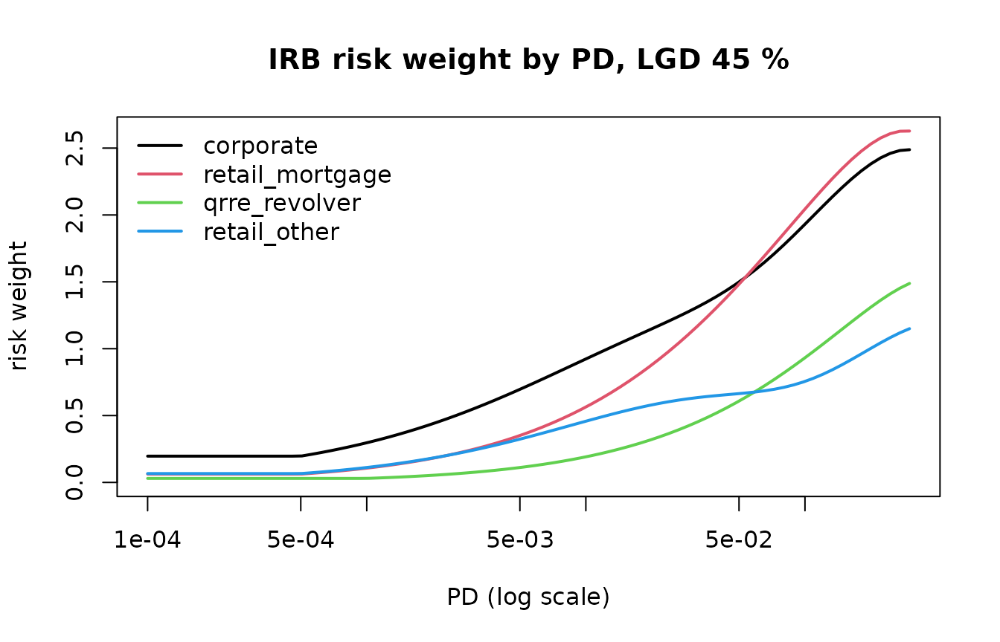

Expected loss and regulatory capital
Source:vignettes/expected-loss-and-capital.Rmd
expected-loss-and-capital.Rmd
library(scorecraft)
library(data.table)
cfg <- scr_config(verbose = FALSE, nthread = 1)1. Expected and unexpected loss
The loss a portfolio produces in an average year is its
expected loss, EL = PD * LGD * EAD; it is
a cost of doing business and is covered by provisions and pricing. The
loss in a bad year exceeds that average, and the gap between a high
quantile of the loss distribution and its mean is the unexpected
loss that capital must absorb. The IRB risk-weight function
turns a through-the-cycle PD into the PD of a year at the 99.9th
percentile of a one-factor model, and charges capital for the difference
between the loss at that quantile and the expected loss. Every number
that a regime fixes in that calculation (PD and LGD floors, asset
correlations, the maturity rule, the confidence level, the standardised
risk weights that the output floor compares against) lives in a table
returned by scr_irb_params() and selected by a preset;
nothing is hard-coded in the functions that consume it, and an edited
table is recorded as such on every object built from it.
2. The parameter tables
p <- scr_irb_params("bcb")
p
#> <scr_irb_params> framework: bcb
#> Resolucao BCB 303/2023 (IRB) and 229/2022 (standardised); values as tables, editable
#> PD floors: corporate 0.05% | bank 0.05% | sovereign none | retail_mortgage 0.05% | qrre_transactor 0.05% | qrre_revolver 0.10% | retail_other 0.05%
#> LGD floors (unsecured): corporate 25% | retail_mortgage n/a | qrre 50% | retail_other 30%
#> F-IRB LGD: senior_unsecured 75% | priority_claim 45% | subordinated 75% | secured_financial 0% | secured_receivables 20% | secured_real_estate 20% | secured_other 25%
#> CCF (standardised): uncond_cancellable 10% | commitment 40% | nif_ruf 50% | direct_substitute 100% | own-estimate floor 50% of the standardised value
#> correlation: corporate 0.12-0.24 (k=50) | mortgage 0.15 | QRRE 0.04 | other retail 0.03-0.16 (k=35) | FI x1.25 | SME adj 0.04 (BRL m 15-300)
#> confidence 0.999 | scaling factor 1 | M default 2.5 in [1, 5] | output floor 72.5% | SA risk weights: 26 rows
p$pd_floor
#> asset_class floor
#> <char> <num>
#> 1: corporate 5e-04
#> 2: bank 5e-04
#> 3: sovereign NA
#> 4: retail_mortgage 5e-04
#> 5: qrre_transactor 5e-04
#> 6: qrre_revolver 1e-03
#> 7: retail_other 5e-04The presets differ in a handful of cells ("bcb" takes
its values from Resolução BCB 303/2023, "basel3_final" from
the consolidated Basel Framework, whose CRE31 chapter is the risk-weight
function). The visible differences are the supervisory LGD table of the
foundation approach and the firm-size bounds of the SME correlation
adjustment.
p_b3 <- scr_irb_params("basel3_final")
rbind(cbind(framework = "bcb", p$lgd_firb), cbind(framework = "basel3_final", p_b3$lgd_firb))
#> framework claim lgd
#> <char> <char> <num>
#> 1: bcb senior_unsecured 0.75
#> 2: bcb priority_claim 0.45
#> 3: bcb subordinated 0.75
#> 4: bcb secured_financial 0.00
#> 5: bcb secured_receivables 0.20
#> 6: bcb secured_real_estate 0.20
#> 7: bcb secured_other 0.25
#> 8: basel3_final senior_unsecured_corporate 0.40
#> 9: basel3_final senior_unsecured_fi 0.45
#> 10: basel3_final subordinated 0.75
#> 11: basel3_final secured_financial 0.00
#> 12: basel3_final secured_receivables 0.20
#> 13: basel3_final secured_real_estate 0.20
#> 14: basel3_final secured_other 0.25
rbindlist(list(c(framework = "bcb", p$correlation$sme), c(framework = "basel3_final", p_b3$correlation$sme)))
#> framework lo hi adj unit
#> <char> <num> <num> <num> <char>
#> 1: bcb 15 300 0.04 BRL m
#> 2: basel3_final 5 50 0.04 EUR mAny cell can be edited and the object passed back through
params; the function that receives it flags
params_modified in its model card.
3. One exposure: scr_el() and
scr_irb_rw()
Expected loss is the primitive. Defaulted exposures replace
PD * LGD with the best estimate of expected loss,
ELBE.
scr_el(c(0.01, 0.02), 0.45, c(1000, 2000))
#> [1] 4.5 18.0
scr_el(0.02, 0.45, 1000, defaulted = TRUE, elbe = 0.6)
#> [1] 600scr_irb_rw() returns the intermediate quantities of the
risk-weight function, not only the answer: the PD and LGD after floors,
the maturity after clipping, the correlation r, the
maturity adjustment ma and the capital requirement
k. A corporate exposure at PD 1 %, LGD 45 % and maturity
2.5 years carries a risk weight of 92.32 %.
scr_irb_rw(0.01, 0.45, m = 2.5, asset_class = "corporate", params = p)
#> pd_used lgd_used m r b ma k rw
#> <num> <num> <num> <num> <num> <num> <num> <num>
#> 1: 0.01 0.45 2.5 0.1927837 0.1374861 1.25981 0.07385344 0.923168
#> rwa
#> <num>
#> 1: 0.923168
rbind(
mortgage = scr_irb_rw(0.01, 0.20, asset_class = "retail_mortgage", params = p),
qrre = scr_irb_rw(0.02, 0.80, asset_class = "qrre_revolver", params = p),
retail_other = scr_irb_rw(0.02, 0.50, asset_class = "retail_other", params = p)
)[, .(pd_used, lgd_used, r, k, rw)]
#> pd_used lgd_used r k rw
#> <num> <num> <num> <num> <num>
#> 1: 0.01 0.2 0.15000000 0.02005295 0.2506619
#> 2: 0.02 0.8 0.04000000 0.04113480 0.5141850
#> 3: 0.02 0.5 0.09455609 0.05154350 0.6442938Retail classes have no maturity adjustment (b is
NA, ma is one), so for them K is
exactly LGD times the distance between the stressed and the
unconditional PD. scr_pd_stress() is that stressed PD, and
at q = 0.999 with the regulatory correlation it reproduces
k to machine precision.
o <- scr_irb_rw(0.02, 0.50, asset_class = "retail_other", params = p)
c(k = o$k, by_hand = 0.5 * (scr_pd_stress(0.02, o$r, 0.999) - 0.02))
#> k by_hand
#> 0.0515435 0.0515435
scr_pd_stress(0.02, rho = 0.15, q = c(0.5, 0.95, 0.99, 0.999))
#> [1] 0.01295348 0.06219237 0.10558734 0.17632894The shape of the function differs by asset class because the correlation does: fixed for mortgages (0.15) and revolving retail (0.04), decreasing in PD for corporates and other retail. Plotted at a common LGD of 45 %:
grid <- exp(seq(log(1e-4), log(0.3), length.out = 80))
classes <- c("corporate", "retail_mortgage", "qrre_revolver", "retail_other")
curves <- lapply(classes, function(a) scr_irb_rw(grid, 0.45, asset_class = a, params = p)$rw)
plot(grid, curves[[1]], type = "n", log = "x", ylim = c(0, max(unlist(curves))),
xlab = "PD (log scale)", ylab = "risk weight", main = "IRB risk weight by PD, LGD 45 %")
for (i in seq_along(classes)) lines(grid, curves[[i]], lwd = 2, col = i)
legend("topleft", classes, col = seq_along(classes), lwd = 2, bty = "n")
The flat start of every curve is the PD floor: below it the risk
weight no longer falls with the PD. The floors_hit
attribute counts the rows where each floor was binding, and
apply_floors = FALSE shows what the function would return
without them.
r_floored <- scr_irb_rw(grid, 0.45, asset_class = "retail_other", params = p)
attr(r_floored, "floors_hit")
#> floor n
#> <char> <int>
#> 1: pd_floor 16
#> 2: lgd_floor 0
#> 3: m_floor 0
#> 4: m_cap 0
r_raw <- scr_irb_rw(grid, 0.45, asset_class = "retail_other", params = p, apply_floors = FALSE)
data.table(pd = grid, rw_floored = r_floored$rw, rw_no_floor = r_raw$rw)[pd < 6e-4][c(1, 5, 10, 15)]
#> pd rw_floored rw_no_floor
#> <num> <num> <num>
#> 1: 0.0001000000 0.06629119 0.01834523
#> 2: 0.0001499881 0.06629119 0.02554640
#> 3: 0.0002489589 0.06629119 0.03839309
#> 4: 0.0004132365 0.06629119 0.05720678
# LGD floors by collateral class: an own estimate of 10 % is lifted to the unsecured floor
scr_irb_rw(0.01, 0.10, asset_class = c("retail_other", "qrre_revolver", "corporate", "retail_mortgage"), params = p)$lgd_used
#> [1] 0.30 0.50 0.25 0.104. The standardised comparison
The output floor compares the IRB result with a fraction of what the
standardised approach would require, so the same book needs a
standardised risk weight per exposure. scr_sa_rw() looks it
up in params$sa_rw: regulatory retail, mortgages by
loan-to-value band, corporates by rating bucket or the SME weight,
defaulted exposures by provision ratio.
scr_sa_rw(c("retail_other", "retail_mortgage", "retail_mortgage", "corporate", "corporate", "corporate_sme"),
ltv = c(NA, 0.55, 0.95, NA, NA, NA), rating = c(NA, NA, NA, "A+", NA, NA))
#> [1] 0.75 0.25 0.50 0.50 1.00 0.85
scr_sa_rw("retail_other", defaulted = TRUE, provision_ratio = c(0.1, 0.3))
#> [1] 1.5 1.0
p$sa_rw[asset_class == "retail_mortgage" & sub_class == "standard"]
#> asset_class sub_class ltv_lo ltv_hi rw
#> <char> <char> <num> <num> <num>
#> 1: retail_mortgage standard 0.0 0.5 0.20
#> 2: retail_mortgage standard 0.5 0.6 0.25
#> 3: retail_mortgage standard 0.6 0.8 0.30
#> 4: retail_mortgage standard 0.8 0.9 0.40
#> 5: retail_mortgage standard 0.9 1.0 0.50
#> 6: retail_mortgage standard 1.0 Inf 0.705. The portfolio: scr_capital()
scr_demo_portfolio holds 5,000 exposures in six segments
that map one to one onto the asset classes; PD is a grade PD and LGD a
pool value, so segment by grade is a homogeneous pool. About 3 % of the
rows are in default with an elbe and a provision.
d <- scr_demo_portfolio
table(d$segment, d$asset_class)
#>
#> corporate corporate_sme qrre_revolver qrre_transactor
#> cards_revolver 0 0 800 0
#> cards_transactor 0 0 0 500
#> corporate_large 500 0 0 0
#> corporate_sme 0 700 0 0
#> mortgages 0 0 0 0
#> retail_loans 0 0 0 0
#>
#> retail_mortgage retail_other
#> cards_revolver 0 0
#> cards_transactor 0 0
#> corporate_large 0 0
#> corporate_sme 0 0
#> mortgages 1000 0
#> retail_loans 0 1500
cap <- scr_capital(d, segment = "segment", asset_class = "asset_class", m = "m",
defaulted = "defaulted", elbe = "elbe", provisions = "provision",
ltv = "ltv", rating = "rating", sales = "sales", transactor = "transactor",
grade = "grade", id = "id", config = cfg, keep_rows = TRUE)
cap
#> <scr_capital> bcb | airb | 5,000 exposures in 6 segments
#> EAD 1,940,402,792 | EL 31,028,477 (1.60%) | RWA IRB 1,214,315,257 | density 62.6% | capital (8.0%) 97,145,221
#> standardised RWA 1,553,528,212 | IRB/SA 0.782 | output floor 72.5%: not binding (headroom 88,007,303)
#> provisions 43,425,571 vs EL: shortfall 0 | excess 12,397,094 | tier 2 add-back 7,285,892 (cap 7,285,892)
#> floors: pd 194 rows, RWA 5,221,058 | lgd 0 rows, RWA 0 | m 0 rows, RWA 0 | HHI 0.00231 (n_eff 433, max share 1.19%)
#> top segments by RWA:
#> corporate_large n 500 EAD 1,451,911,238 RW 65.1% RWA 944,938,904 IRB/SA 0.77
#> corporate_sme n 700 EAD 302,516,540 RW 79.2% RWA 239,492,431 IRB/SA 0.92
#> mortgages n 1,000 EAD 165,305,905 RW 12.6% RWA 20,764,980 IRB/SA 0.37
#> retail_loans n 1,500 EAD 15,592,011 RW 44.5% RWA 6,935,236 IRB/SA 0.59
#> cards_revolver n 800 EAD 3,282,347 RW 54.2% RWA 1,777,936 IRB/SA 0.71
#> sensitivity: vasicek_q0.99 +95.8% | vasicek_q0.95 +55.7% | r_x1.25 +26.8%Totals and the reconciliation by segment
Every figure on the print is in cap$totals, and
cap$segments breaks it down: EAD-weighted inputs, the IRB
and standardised risk-weighted assets side by side, expected loss and
provisions.
with(cap$totals, data.table(ead, el, el_rate, rwa_irb, rwa_sa, irb_sa_ratio, density, capital))
#> ead el el_rate rwa_irb rwa_sa irb_sa_ratio density
#> <num> <num> <num> <num> <num> <num> <num>
#> 1: 1940402792 31028477 0.01599074 1214315257 1553528212 0.78165 0.6258058
#> capital
#> <num>
#> 1: 97145221
cap$segments[, .(segment, n, ead, pd_mean, lgd_mean, rw, rwa_irb, irb_sa_ratio, el, provisions, shortfall_excess)]
#> segment n ead pd_mean lgd_mean rw rwa_irb
#> <char> <int> <num> <num> <num> <num> <num>
#> 1: corporate_large 500 1451911238 0.03359715 0.40 0.6508242 944938904.4
#> 2: corporate_sme 700 302516540 0.06973651 0.42 0.7916672 239492431.3
#> 3: mortgages 1000 165305905 0.01792392 0.15 0.1256155 20764979.8
#> 4: retail_loans 1500 15592011 0.05400681 0.45 0.4447942 6935236.3
#> 5: cards_revolver 800 3282347 0.07501589 0.75 0.5416660 1777935.7
#> 6: cards_transactor 500 1794751 0.03000090 0.70 0.2260868 405769.5
#> irb_sa_ratio el provisions shortfall_excess
#> <num> <num> <num> <num>
#> 1: 0.7729808 20926478.3 30840652 9914173.739
#> 2: 0.9233544 9087003.5 10039600 952596.493
#> 3: 0.3672066 421450.8 1963358 1541907.188
#> 4: 0.5866356 374260.3 396848 22587.723
#> 5: 0.7118514 181708.6 142177 -39531.608
#> 6: 0.4907211 37575.5 42936 5360.503The irb_sa_ratio column says where the IRB approach
saves the most against the standardised one; mortgages sit far below the
72.5 % line on their own, the corporate book far above it, and the
output floor is applied to the total, not by segment.
Floors and the output-floor bridge
cap$floors measures each input floor by the rows it
binds, their EAD and the risk-weighted assets it adds. Here only the PD
floor bites (the two safest grades start below it on purpose), and the
bridge from the unfloored IRB figure to the reported one reads:
cap$floors
#> floor n_hit ead_hit delta_rwa
#> <char> <int> <num> <num>
#> 1: pd_floor 194 110745561 5221058
#> 2: lgd_floor 0 0 0
#> 3: m_floor 0 0 0
with(cap$totals, data.table(
step = c("rwa_irb_no_floors", "input_floors", "rwa_irb", "rwa_sa", "output_floor_rwa", "rwa_reported"),
value = c(rwa_irb_no_floors, rwa_irb - rwa_irb_no_floors, rwa_irb, rwa_sa, rwa_floor, rwa_reported)))
#> step value
#> <char> <num>
#> 1: rwa_irb_no_floors 1209094199
#> 2: input_floors 5221058
#> 3: rwa_irb 1214315257
#> 4: rwa_sa 1553528212
#> 5: output_floor_rwa 1126307953
#> 6: rwa_reported 1214315257
with(cap$totals, data.table(floor_binding, headroom))
#> floor_binding headroom
#> <lgcl> <num>
#> 1: FALSE 88007303rwa_reported is the larger of the IRB figure and
output_floor * rwa_sa; headroom is the
distance to the floor, negative when it binds.
Expected loss against provisions
Regulatory EL is compared with the provision stock. A shortfall is
deducted from capital; an excess counts as tier 2 up to 0.6 % of the IRB
risk-weighted assets, which is why tier2_addback can be
smaller than excess.
with(cap$totals, data.table(el, provisions, shortfall, excess, tier2_cap, tier2_addback))
#> el provisions shortfall excess tier2_cap tier2_addback
#> <num> <num> <num> <num> <num> <num>
#> 1: 31028477 43425571 0 12397094 7285892 7285892Sensitivity
The grid re-runs the whole function under fixed shocks. The two
Vasicek rows stress every performing PD with
scr_pd_stress() at the exposure’s own correlation and feed
the stressed PD back into the function, so that the correlation follows
the PD; they are the closest the grid comes to a bad-year capital
figure.
cap$sensitivity
#> shock rwa delta delta_pct
#> <char> <num> <num> <num>
#> 1: base 1214315257 0 0.000000000
#> 2: pd_x1.10 1256949940 42634684 0.035110062
#> 3: pd_x1.25 1315374005 101058749 0.083222827
#> 4: pd_x1.50 1401061020 186745763 0.153786887
#> 5: lgd_plus_5pp 1380658748 166343491 0.136985424
#> 6: ead_x1.10 1335746783 121431526 0.100000000
#> 7: no_floor 1209094199 -5221058 -0.004299591
#> 8: r_x1.25 1540264244 325948987 0.268422047
#> 9: vasicek_q0.95 1890754479 676439222 0.557054042
#> 10: vasicek_q0.99 2377857720 1163542463 0.9581881286. The same numbers in SQL
The production query does not need a normal quantile: the constants
of every pool (PD, LGD, correlation, K, RW,
all after floors) are computed in R and emitted as a
pool_params CTE, and the exposure table is joined to it on
segment and grade. Defaulted rows use ELBE * EAD and
K = max(0, LGD - ELBE) from their own columns.
sql <- scr_sql(cap, table = "portfolio", dialect = "duckdb")
cat(sql[c(4:9, 12:15)], sep = "\n")
#> -- CTE pool_params: PD, LGD, correlation, K and RW per pool, computed in R
#> -- (floors applied; no normal quantile needed at run time).
#> -- CTE exposure_capital: el = pd * lgd * ead, rwa = 12.5 * k * ead per exposure;
#> -- rows with defaulted = 1 use ELBE * ead and K = max(0, LGD - ELBE).
#> -- NOTE: at least one pool is not homogeneous: its constants are EAD-weighted, so
#> -- EL and RWA are exact per pool and approximate per exposure. Pass `grade` for finer pools.
#> WITH pool_params AS (
#> SELECT 'cards_revolver' AS segment, 'G01' AS grade, 0.001 AS pd, 0.75 AS lgd, 0.04 AS r, 0.0036114040962495642 AS k, 0.045142551203119552 AS rw
#> UNION ALL
#> SELECT 'cards_revolver' AS segment, 'G02' AS grade, 0.001 AS pd, 0.75 AS lgd, 0.04 AS r, 0.0036114040962495642 AS k, 0.045142551203119552 AS rw
cat(tail(sql, 21), sep = "\n")
#> SELECT
#> e.id,
#> e.segment,
#> e.grade,
#> e.ead AS ead,
#> CASE WHEN e.defaulted = 1 THEN COALESCE(e.elbe, e.lgd) * e.ead ELSE p.pd * p.lgd * e.ead END AS el,
#> CASE WHEN e.defaulted = 1 THEN (CASE WHEN e.lgd - COALESCE(e.elbe, e.lgd) > 0 THEN e.lgd - COALESCE(e.elbe, e.lgd) ELSE 0 END) ELSE p.k END AS k
#> FROM portfolio e
#> JOIN pool_params p ON e.segment = p.segment AND e.grade = p.grade
#> )
#>
#> SELECT
#> id,
#> segment,
#> grade,
#> ead,
#> el,
#> k,
#> 12.5 * k AS rw,
#> 12.5 * k * ead AS rwa
#> FROM exposure_capital;The retail pools are homogeneous, so the query reproduces R row by row; the corporate pools carry a maturity that varies inside the pool, so their constants are EAD-weighted and the match is exact at pool level (the header of the SQL says so). Both facts can be checked on DuckDB.
con <- DBI::dbConnect(duckdb::duckdb(), config = list(threads = "1"))
DBI::dbWriteTable(con, "portfolio", d)
got <- DBI::dbGetQuery(con, paste(sql, collapse = "\n"))
got <- got[match(d$id, got$id), ]
ex <- cap$exposures
retail <- !d$segment %in% c("corporate_large", "corporate_sme")
data.table(id = d$id, segment = d$segment, el_r = ex$el, el_sql = got$el, rwa_r = ex$rwa, rwa_sql = got$rwa)[retail][1:4]
#> id segment el_r el_sql rwa_r rwa_sql
#> <char> <char> <num> <num> <num> <num>
#> 1: E00001 retail_loans 18.65707 18.65707 2386.003 2386.003
#> 2: E00002 mortgages 256.42922 256.42922 36989.679 36989.679
#> 3: E00003 cards_revolver 99.56714 99.56714 2210.792 2210.792
#> 4: E00004 mortgages 68.02380 68.02380 12261.888 12261.888
c(el = all.equal(got$el[retail], ex$el[retail]), rwa = all.equal(got$rwa[retail], ex$rwa[retail]))
#> el rwa
#> TRUE TRUE
agg <- DBI::dbGetQuery(con, paste(scr_sql(cap, table = "portfolio", dialect = "duckdb", level = "portfolio"), collapse = "\n"))
agg <- agg[match(cap$segments$segment, agg$segment), ]
c(rwa = all.equal(agg$rwa, cap$segments$rwa_irb), el = all.equal(agg$el, cap$segments$el))
#> rwa el
#> TRUE TRUE
DBI::dbDisconnect(con, shutdown = TRUE)7. Accounting expected credit loss: scr_ecl()
scr_ecl() computes the discrete-time expected credit
loss: a survival-weighted sum of marginal monthly hazards times LGD and
EAD, discounted at the effective interest rate. With a flat hazard, no
discounting and no prepayment the sum collapses to the closed form
LGD * EAD * (1 - (1 - h)^T).
cfg_none <- scr_config(verbose = FALSE, nthread = 1, ecl_discount = "none")
h <- 0.01; lgd <- 0.4; ead <- 1000
e1 <- scr_ecl(h, lgd, ead, t_max = 36L, config = cfg_none)
c(ecl_12m = e1$totals$ecl_12m, closed_form = lgd * ead * (1 - (1 - h)^12),
ecl_life = e1$totals$ecl_life, closed_form = lgd * ead * (1 - (1 - h)^36))
#> ecl_12m closed_form ecl_life closed_form
#> 45.44605 45.44605 121.43471 121.43471On the portfolio, the annual grade PD becomes a flat monthly hazard,
the stage is allocated by the rule (days past due, or a doubling of the
PD since origination), and three scenarios are weighted. The
z shock moves every hazard through the one-factor model;
lgd_add and ead_mult do what their names
say.
hz <- 1 - (1 - d$pd)^(1 / 12)
ecl <- scr_ecl(hz, d$lgd, d$ead, eir = d$eir, dpd = d$dpd, pd_orig = d$pd_orig, t_max = 36L,
segment = d$segment, id = d$id,
scenarios = list(base = list(), downturn = list(z = -1, lgd_add = 0.05), upturn = list(z = 1)),
weights = c(0.5, 0.3, 0.2), config = cfg)
ecl
#> <scr_ecl> 5,000 exposures | ECL 31,844,876 | coverage 1.64% | 12-month horizon 12 of 36 months | discount: eir
#> stage rule: dpd >= 90 -> stage 3; dpd >= 30 or PD ratio >= 2 -> stage 2
#> stage 1 n 4,304 EAD 1,687,138,403 ECL 7,929,306 coverage 0.47%
#> stage 2 n 542 EAD 201,418,836 ECL 2,448,913 coverage 1.22%
#> stage 3 n 154 EAD 51,845,553 ECL 21,466,657 coverage 41.41%
#> 12-month 30,364,216 | lifetime 43,365,170 | scenarios: base 0.50, downturn 0.30, upturn 0.20
ecl$scenarios
#> scenario weight ecl_12m ecl_life ecl
#> <char> <num> <num> <num> <num>
#> 1: base 0.5 28846459 41112620 30230826
#> 2: downturn 0.3 38666873 60477202 41191373
#> 3: upturn 0.2 21704624 23328500 21860257
ecl$stages
#> Key: <stage>
#> stage n ead ecl_12m ecl_life ecl coverage
#> <int> <int> <num> <num> <num> <num> <num>
#> 1: 1 4304 1687138403 7929306.1 19449600 7929306 0.004699855
#> 2: 2 542 201418836 968252.8 2448913 2448913 0.012158310
#> 3: 3 154 51845553 21466657.4 21466657 21466657 0.414050119Accounting ECL and regulatory EL measure different things and are not
expected to agree: the ECL of stage 2 is a lifetime figure, the ECL of
stage 3 is LGD * EAD rather than ELBE * EAD,
and the scenario weights tilt the accounting number. Laying the two side
by side per segment is nevertheless the first table a reconciliation
asks for.
merge(cap$segments[, .(segment, ead, el_regulatory = el, provisions)],
ecl$segments[, .(segment, ecl_accounting = ecl, share_stage2, share_stage3)], by = "segment")[order(-ead)]
#> segment ead el_regulatory provisions ecl_accounting
#> <char> <num> <num> <num> <num>
#> 1: corporate_large 1451911238 20926478.3 30840652 21161783.28
#> 2: corporate_sme 302516540 9087003.5 10039600 9516734.43
#> 3: mortgages 165305905 421450.8 1963358 531916.08
#> 4: retail_loans 15592011 374260.3 396848 406081.75
#> 5: cards_revolver 3282347 181708.6 142177 190006.99
#> 6: cards_transactor 1794751 37575.5 42936 38353.51
#> share_stage2 share_stage3
#> <num> <num>
#> 1: 0.0960000 0.02600000
#> 2: 0.1114286 0.04000000
#> 3: 0.1020000 0.01000000
#> 4: 0.1153333 0.03466667
#> 5: 0.1150000 0.05250000
#> 6: 0.0980000 0.01800000
c(el_regulatory = cap$totals$el, ecl_accounting = ecl$totals$ecl, provisions = cap$totals$provisions)
#> el_regulatory ecl_accounting provisions
#> 31028477 31844876 434255718. Deliverables
scr_export() writes one workbook with the summary, the
configuration and every table of the object, plus the SQL file.
out <- file.path(tempdir(), "scorecraft-capital")
cap <- scr_export(cap, out, stamp = FALSE)
basename(unlist(cap$files))
#> [1] "capital_bcb.xlsx" "sql_capital_bcb.sql"
openxlsx::getSheetNames(cap$files$xlsx)
#> [1] "Capital_Summary" "Capital_Config"
#> [3] "Segments_Reconciliation" "Pools"
#> [5] "Floors_Impact" "Output_Floor_Bridge"
#> [7] "Sensitivity" "Concentration"
#> [9] "EL_vs_Provisions" "Exposures"
#> [11] "Model_Card" "Decision_Ledger"9. The ledger and the model card
Every choice the function made on the caller’s behalf is a row of the ledger: the preset and approach, where the inputs came from, how many rows each floor touched, whether the output floor binds, and the provision comparison. The model card carries the numbers a validator needs to reproduce the run, including whether the parameter tables were edited.
cap$ledger[, .(action, detail)]
#> action
#> <char>
#> 1: framework
#> 2: inputs
#> 3: floors
#> 4: output_floor
#> 5: provisions
#> detail
#> <char>
#> 1: bcb | approach airb | params preset
#> 2: pd: column | lgd: column | ead: column | asset_class: column asset_class
#> 3: pd floor on 194 rows, lgd floor on 0 rows, maturity clipped on 0 rows
#> 4: 72.5% of the standardised RWA: not binding
#> 5: EL 31028477 vs provisions 43425571: shortfall 0, excess 12397094, tier 2 add-back 7285892
mc <- cap$model_card
keys <- c("framework", "approach", "params_modified", "pd_source", "n_exposures", "n_defaulted",
"n_pools", "rwa_irb", "rwa_sa", "output_floor_binding", "density", "capital",
"shortfall", "excess", "scaling_factor", "confidence")
data.table(field = keys, value = vapply(mc[keys], function(v) format(v, digits = 6), character(1)))
#> field value
#> <char> <char>
#> 1: framework bcb
#> 2: approach airb
#> 3: params_modified FALSE
#> 4: pd_source column
#> 5: n_exposures 5000
#> 6: n_defaulted 154
#> 7: n_pools 59
#> 8: rwa_irb 1214315257
#> 9: rwa_sa 1553528212
#> 10: output_floor_binding FALSE
#> 11: density 0.625806
#> 12: capital 97145221
#> 13: shortfall 0
#> 14: excess 12397094
#> 15: scaling_factor 1
#> 16: confidence 0.999Two runs with the same framework, approach,
params_modified = FALSE and the same input sources are
comparable; a run with params_modified = TRUE is a
different regime and must say which cells changed.